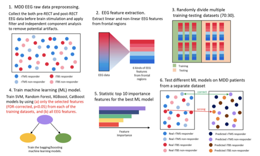
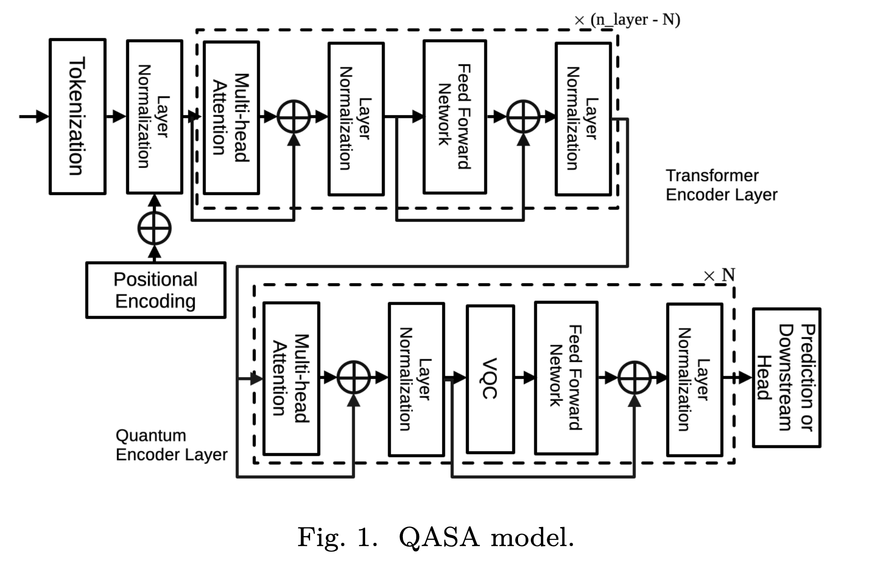

I develop interpretable representations and foundation models for physiological time series,
with a focus on EEG and clinical decision support. My work connects frequency-domain and geometric learning
with clinical use: an EEG treatment-response model I built is in routine outpatient use at Taipei Veterans General Hospital's
Precision Depression Intervention Center (PreDIC).
I am a Research Affiliate at
Harvard Medical School and
Beth Israel Deaconess Medical Center (BIDMC),
working with Prof. Gabriel Brat
on multimodal EMS trauma triage.
I am applying to PhD programs for Fall 2027.
You can contact me at:
m50816m50816 [at] gmail.com |
chisheng.m.chen [at] gmail.com
🏆 Nov 2026: Our team AlloWalk advanced to the finals of the 2026 Global Quantum + AI Challenge (The Quantum Insider) in the Cleveland Clinic challenge, "Unlocking Undruggable Targets: Quantum Simulation of Allosteric Signal Propagation" (Phase 1 drew 1,000+ entrants across five enterprise challenges).
🚩 Aug–Oct 2026:MICCAI 2026, Strasbourg, France — "Measuring Browser Webcam Gaze Honestly: A Capture-Clock Methodology and Open Reference Implementation" (with Prof. Gabriel Brat, Harvard/BIDMC) accepted at the DEMI 2026 workshop and presented as a spotlight talk[OpenReview]; poster on "Web-Based Webcam Video Recording Enables Hand Keypoint Detection for Open Surgical Skill Assessment" at the CLINICCAI Clinical Day (presenting author).
🚩 Jun 2026: Two short papers accepted at Digital Humanities 2026 (DH2026), Daejeon, South Korea — "Predicting Poets' Origins from Verse" and "Gendered Voices in Tang Poetry."
🎖️ May 2026: Recognized as Gold Reviewer at ICML 2026, placing among the top reviewers based on area chair ratings.
🏆 Feb 2026: Our team MadGAA achieved 3rd Place in the Healthcare Agent track at the Berkeley RDI AgentX-AgentBeats competition (Phase 1; 1,300+ teams joined the competition overall). [Project]
🚩 Jan 2026: Two papers accepted at IEEE ICASSP 2026 — "Quantum Reinforcement Learning-Guided Diffusion Model for Image Synthesis" (oral presentation) and "Quantum Adaptive Self-Attention for Financial Rebalancing: An Empirical Study on Automated Market Makers in Decentralized Finance" (oral presentation).
Selected Publications

Prediction of Antidepressant Responses to Non-Invasive Brain Stimulation Using Frontal EEG Signals
CT Li, CS Chen, CM Cheng, CP Chen, JP Chen, MH Chen, YM Bai, et al. [2nd author; derived from my master's thesis]
Journal of Affective Disorders (JAD), 2023
Finding: Pretreatment frontal EEG (linear + non-linear features) with a random-forest model predicted response to rTMS (83.3%) and iTBS (88.9%) in 163 patients with treatment-resistant depression; in an independent outpatient cohort (n = 208), patients screened with the prediction before treatment had higher response rates (p = 0.035).
My contribution: built the machine-learning prediction pipeline (SVM / random forest / XGBoost / CatBoost on frontal EEG features) as my M.S. thesis work; the model is now in routine use at PreDIC.
Large Cognition Model: Towards Pretrained EEG Foundation Model
CS Chen, YJ Chen, AHW Tsai.
arXiv preprint, 2025 (30 citations)
Finding: A transformer EEG foundation model with temporal and spectral attention, pretrained self-supervised, generalizes across subjects, datasets and tasks, and outperforms prior EEG models on several benchmarks (preprint).
My contribution: designed the temporal–spectral attention architecture and the self-supervised pretraining, and ran the cross-dataset, cross-task evaluation.
Exploring the Potential of EEG Signal-Based Image Generation Using Diffusion Models: Integrative Framework Combining Mixed Methods and Multimodal Analysis
CS Chen, SH Chang, CW Liu, TM Pan.
JMIR Medical Informatics, 13(1), e72027, 2025 (journal version of NECOMIMI)
Finding: The NERV encoder reached 94.8% (2-way) and 86.8% (4-way) zero-shot EEG–image classification on ThingsEEG, above NICE, MUSE and ATM; a two-stage EEG→diffusion pipeline recovers scene-level semantics, and perturbing visual-cortex channels sharply degrades generation.
My contribution: designed the NERV EEG encoder, the two-stage EEG-to-diffusion generation pipeline and the CAT score for evaluating generated images.
Finding: Adding variational quantum layers to EEGNet outperformed classical EEGNet for most subjects on BCI Competition IV-2a, with better robustness to noise; the journal version tests cross-task and cross-dataset encoding.
My contribution: designed the hybrid quantum–classical architecture and the evaluation, and extended it to cross-task, cross-dataset settings for the journal version.
Quantum MLEEG

Quantum Adaptive Self-Attention for Quantum Transformer Models
CS Chen, EJ Kuo.
Quantum Science and Technology, 11(3), 2026
Finding: Replacing one encoder layer's value projection with a 36-parameter quantum circuit improves forecasting on chaotic and trend-dominated series — but a capacity-matched classical bottleneck matches it, so the gain is architectural, not quantum. The trained model runs on a real IBM quantum processor.
My contribution: designed QASA and the capacity-matched-control evaluation protocol, including validation on IBM quantum hardware.
My research asks one question: what does a model actually represent when it learns from a physiological signal, and can that representation be made legible to the clinician who has to act on it?
I pursue it along a single arc — from representation, to foundation models, to clinical deployment.
Representation Learning & Biosignal Foundation Models
My core research develops interpretable representations of physiological time series and scales them into
cross-task, cross-dataset biosignal foundation models.
Evidence:
temporal–spectral attention for EEG foundation models — Large Cognition Model (arXiv 2025, 30 citations);
contrastive EEG–image representation learning — MUSE (arXiv 2024, 34 citations) and the NERV encoder (JMIR Medical Informatics 2025).
Ongoing work: frequency-domain attribution and tokenization for forecasting; Riemannian (SPD) embeddings for EEG classification.
Clinical AI & Deployment
EEGMultimodal AIEmergency MedicinePsychiatrySpeech & ASR
Developing AI systems for clinical neuroscience and emergency medicine.
My EEG-based depression treatment prediction models have been Clinically Deployed at the
Precision Depression Intervention Center (PreDIC)
at Taipei Veterans General Hospital, serving real outpatient patients.
At Harvard/BIDMC, I am building real-time EMS triage pipelines using multimodal AI for trauma prediction,
collaborating with surgeons on AI-assisted decision support systems.
I also develop multimodal contrastive learning methods for EEG-image alignment, such as MUSE.
The EMS pipeline also carries the speech and language layer — ASR transcription of EMS audio, automated clinical documentation and emergency-page generation.
Earlier clinical work applied deep learning to intraoperative surgical-gauze detection for operating-room safety.
As a secondary methodological line, I explore hybrid quantum-classical architectures for time-series and sequential data,
including the Quantum Adaptive Self-Attention (QASA) Transformer, QuantumRWKV, and QEEGNet for quantum EEG classification.
Applications span EEG signal processing, financial time-series forecasting, and image generation.
Department of Surgery, Harvard Medical School & Beth Israel Deaconess Medical CenterMA, USA
Research Affiliate (primary appointment), Advisor: Prof. Dr. Gabriel BratNov 2024 – Present
Building a real-time EMS trauma-triage pipeline (ASR → LLM-agent event extraction → structured prediction) on an EMS database of 4M+ patient records, using multimodal AI.
Co-developed webcam-based open-surgical skill assessment (hand keypoint detection; CLINICCAI 2026 poster) and a capture-clock methodology for browser webcam gaze (DEMI 2026 spotlight talk).
Neuro Industry, Inc.CA, USA
Researcher, Co-Founder & CTOMar 2024 – Jan 2025
Built GCP-based MLOps pipeline, enabling training on 10K+ EEG epochs.
2 research papers on quantum machine learning on EEG signal processing.
1 research paper on EEG-to-image using diffusion model.
Department of Computer Science, National Yang Ming Chiao Tung UniversityHsinchu, Taiwan
Searching new possible unconventional superconductors among Co-based quaternary chalcogenides with diamond-like structure CuInCo₂A₄ / AgInCo₂A₄ (A = Te, Se, S).
Thesis: EEG-based prediction of antidepressant response to transcranial magnetic stimulation in major depression, using attention-based time-series prototypical networks and classical/quantum machine learning. [PDF][NDLTD]
Fractional Token Efficiency Research Lead (Advisor)Aug 2026 – Present
Advising the AI × quantitative-trading division of VICI Holdings (Taiwan's leading proprietary high-frequency trading firm) on LLM token-efficiency research, multi-agent architecture, and financial data extraction.
Contributed to Reinforcement Learning from Human Feedback (RLHF) pipelines through high-complexity AI data labeling, preference rankings, and model-behavior assessments for instruction following, multimodal reasoning, and safety alignment.
2023: Certificate of the 20th National Innovation Award (Taiwan), clinical research category — for the EEG treatment-response model now deployed at Taipei VGH PreDIC.
2019: International Blockchain Olympiad (IBCOL): World Finalist competition (100+ teams).
2017: Microsoft International Imagine Cup: 2nd place in Taiwan.